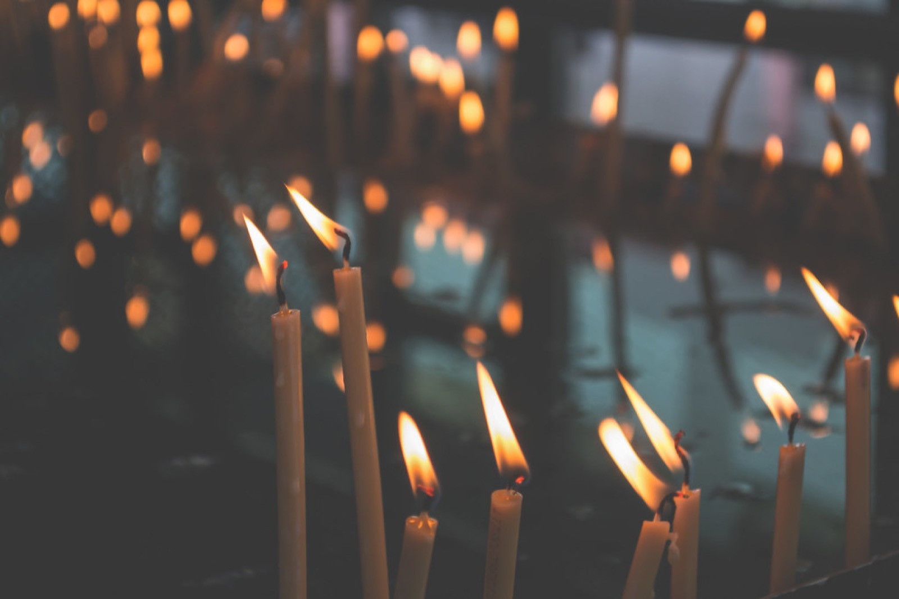

ESTABLISHED 1880
First Baptist ChurchIn Loup City this congregation gathers to worship God, baptize its children, and carry one another in hope. The doors are open, and the pew is warm.
PLAN YOUR VISIT
WHO WE ARE
We confess the faith of the apostles and the creeds, sing the hymns of the church across the centuries, and hear the Scriptures preached without hurry. Grace is served here — week by week, day by day.
Families worship together here. Children's bulletins, cry room, and patient pews — wiggles are welcome.
ORDER OF WORSHIP
“O worship the Lord in the beauty of holiness.”
PARISH LIFE
†
Classes for every age — children and adults alike, with coffee nearby.
†
Young people gather for supper, study, and service to neighbors.
†
Small circles that meet in homes for prayer, Scripture, and casseroles of legendary quality.
Arrive a few minutes early and someone will gladly find you a seat — and, if you'd like, an introduction or two. Pastor Delmar Unruh would love to welcome you.
PLAN YOUR VISIT